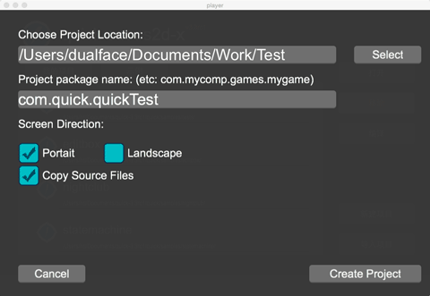

创建工程
通过 Player 创建工程:
- 运行
Player ,点击 新建工程
- 选择新工程的参数, 点击
Create Project ,会弹出一个命令窗口来创建

通过命令窗口创建工程:
- 打开命令窗口
- 进到
quick/bin 目录
- 输出
./create_project.sh -p com.quick.quickTest 创建一个包名为 com.quick.quickTest 的工程
create_project.sh 的更多参数可以输出 ./create_project.sh -h 来了解
create_project.sh 的参数:
- -h show help
- -p package name
- -o project path (default is "current_dir/last_package_name")
- -r screen orientation (default is "portrait")
- -np dont create project files for platform
- -op only create project files
- -f overwrite exists files
- -c load options from config file
- -q quiet
- -t template dir
- -lt use template-lite
windows的用法相似,把 XXX.sh 替换为 XXX.bat